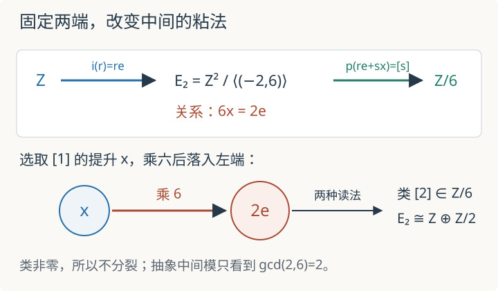

本页目录
基础衔接 07 · Hom、Ext 与扩张：相同两端之间能藏多少结构
先修：模与正合性、链复形、张量积与 Tor。目标：完整计算 \(\operatorname{Ext}^1_{\mathbb Z}(\mathbb Z/n,\mathbb Z)\)，再把每个类写成一条具体短正合列。全讲取整数 \(n\ge2\)，所有 Hom 与 Ext 都在 \(\mathbb Z\)-模范畴中计算。
1. 两端相同，中间就被决定了吗
比较两条短正合列：
第一条显然分裂：\([r]\mapsto(0,[r])\) 是右箭头的同态截面。第二条不分裂；若有 \(s:\mathbb Z/n\to\mathbb Z\) 且 \(q\circ s=\mathrm{id}\)，则 \(ns([1])=s([n])=0\)，只能有 \(s([1])=0\)，与 \(q(s([1]))=[1]\) 矛盾。两端都是 \(\mathbb Z\) 与 \(\mathbb Z/n\)，中间的粘法却不同。
扩张就是一条短正合列
比较两条扩张时，不只问中间模是否抽象同构；还要求中间的同构与两端的恒等映射组成交换图。注入 \(i\)、商映射 \(p\) 都是数据。\(\operatorname{Ext}^1(B,A)\) 分类的正是这种固定两端的扩张等价类；零元对应分裂扩张。
2. 先用自由分解算出 Ext
\(\mathbb Z/n\) 有长度一的自由分解
计算 \(\operatorname{Ext}^{\bullet}_{\mathbb Z}(\mathbb Z/n,\mathbb Z)\) 时，对两个自由项使用 \(\operatorname{Hom}_{\mathbb Z}(-,\mathbb Z)\)。Hom 对第一变量反变，所以箭头反向，得到上同调次数 \(0,1\) 的复形
同态 \(f:\mathbb Z\to\mathbb Z\) 由整数 \(f(1)\) 唯一决定，因此两个 Hom 都可识别为 \(\mathbb Z\)。预合成乘 \(n\) 后，
所以复形就是 \(\mathbb Z\xrightarrow{\times n}\mathbb Z\)。零次上同调为乘 \(n\) 的核，即零；这也符合 \(\operatorname{Hom}(\mathbb Z/n,\mathbb Z)=0\)。一次上同调是余核：
高次 Ext 在本例消失，因为所用自由分解长度为一。这个计算没有证明任意环上的任意模都没有更高 Ext。
3. 每个剩余类怎样变成一条扩张
给定整数 \(a\)，令
把 \((1,0)\) 的类记为 \(e\)，把 \((0,1)\) 的类记为 \(x\)；唯一写出的关系是
定义 \(i(r)=re\)，以及 \(p(re+sx)=[s]\in\mathbb Z/n\)。关系 \(nx=ae\) 在 \(p\) 下变成 \([n]=0\)，所以 \(p\) 良定义。若 \(re=0\)，则 \((r,0)\) 是 \((-a,n)\) 的整数倍；比较第二坐标得该倍数为零，故 \(r=0\)，所以 \(i\) 单射。若 \(p(re+sx)=0\)，则 \(s=kn\)，再用 \(nx=ae\) 得 \(re+sx=(r+ka)e\)，正好落在 \(i\) 的像中。因此
确实正合。
选择 \([1]\) 的提升 \(x\) 后，\(nx\) 必落在核中，于是唯一写成 \(nx=i(a)\)。若改选提升 \(x+i(b)\)，则
因此扩张只记住 \([a]\in\mathbb Z/n\)。反过来，若 \(a'=a+nb\)，映射 \(e\mapsto e'\)、\(x\mapsto x'-be'\) 给出固定两端的扩张同构。这样，具体提升的账本与上一节算出的 \(\mathbb Z/n\) 完全对上。

4. 中间模的类型为什么还不够
令 \(d=\gcd(a,n)\)。对单个关系向量 \((-a,n)\) 作整数可逆换基，Smith 标准形给出
这一步可用 Bézout 恒等式检查：选整数 \(u,v\) 使 \(-ua+vn=d\)，矩阵
因此整数可逆换基把唯一关系变成第一坐标的 \(d\) 倍为零，第二坐标自由；当 \(d=1\) 时挠部分消失。
但这个抽象群只看到 \(d\)，扩张类却看到 \(a\) 模 \(n\)。例如 \(n=5\) 时，\(a=1,2,3,4\) 都有 \(d=1\)，所以中间模都同构于 \(\mathbb Z\)；它们仍代表 \(\operatorname{Ext}^1\cong\mathbb Z/5\) 中四个不同的非零类，因为固定的注入和商映射不同。
分裂条件也能直接从关系看出。若有截面，\([1]\) 的某个提升 \(y=x+i(b)\) 必须满足 \(ny=0\)，即 \(i(a+nb)=0\)。由 \(i\) 单射，必须有 \(a\equiv0\pmod n\)。反之 \(a\equiv0\) 时可调整提升使其被 \(n\) 杀死，从而得到截面。因此
本讲开头的非分裂列对应 \(a=1\)，其中 \(E_1\cong\mathbb Z\)；分裂列对应 \(a=0\)，其中 \(E_0\cong\mathbb Z\oplus\mathbb Z/n\)。所以“中间项自由”不推出扩张分裂，“两端固定”也不推出中间项唯一。
先预测：默认 \(n=6,a=2\) 的扩张是否分裂？实验把 \(a\) 先读成模 \(n\) 的类，再报告 \(d=\gcd(a,n)\)、中间模 \(\mathbb Z\oplus\mathbb Z/d\) 与分裂条件。静态默认结果为 \([a]=[2]\)、\(d=2\)、\(E_a\cong\mathbb Z\oplus\mathbb Z/2\)，扩张不分裂。
5. 它和 Hom、Tor、层上同调怎样接起来
Hom 记录实际同态；Ext 记录同态不能直接完成时留下的高阶信息。这里 \(\operatorname{Hom}(-,\mathbb Z)\) 未能把乘 \(n\) 后的每个整数同态向左提升，余核产生 Ext。上一讲中 Tor 来自“先分解再张量”的同调；本讲 Ext 来自“先分解再 Hom”的上同调。二者都是导出函子，但一个校正张量积，一个校正 Hom。
在射影直线的 Čech 计算中，\(\operatorname{Ext}^1(L,M)\cong H^1(M\otimes L^{-1})\) 把线丛扩张送到一次上同调。本讲的整数模型解释“扩张类”究竟固定什么，不等于已经证明这条几何识别，也没有分类所有向量丛。
6. 两道迁移题
题一。 取 \(n=8,a=6\)。写出扩张类、中间模的抽象类型，并判断是否分裂。把 \(a\) 改成 \(14\) 会改变答案吗？
查看关系与剩余类
\([a]=[6]\in\mathbb Z/8\)，\(d=\gcd(6,8)=2\)，所以 \(E_6\cong\mathbb Z\oplus\mathbb Z/2\)。类非零，扩张不分裂。\(14\equiv6\pmod8\)，改变提升即可得到固定两端的等价扩张；\(\gcd(14,8)=2\) 也给出相同的中间模类型。
题二。 在标准列 \(0\to\mathbb Z\xrightarrow{\times n}\mathbb Z\to\mathbb Z/n\to0\) 中，选 \([1]\) 的提升为中间整数 \(1\)。它对应哪个 \(a\)？为什么中间模是 \(\mathbb Z\) 仍不能分裂？
查看提升账本
注入把 \(1\) 送到 \(n\)，而提升 \(x=1\) 满足 \(nx=n=i(1)\)，所以 \(a=1\)。当 \(n\ge2\) 时 \([1]\ne0\)，故扩张不分裂。分裂需要中间项包含一个被 \(n\) 杀死、又映到 \([1]\) 的元素；\(\mathbb Z\) 没有这样的非零挠元。
速查与资料
自由分解后应用 \(\operatorname{Hom}(-,\mathbb Z)\)，一次余核给出 \(\operatorname{Ext}^1_{\mathbb Z}(\mathbb Z/n,\mathbb Z)=\mathbb Z/n\)；具体类 \([a]\) 可写成 \(nx=ae\)；分裂等价于 \([a]=0\)。下一讲：联络、水平截面与 D-模入口。扩张及固定两端的等价定义见 Stacks Project：Extensions，Ext 与扩张类的识别见 Stacks Project：Injective modules。本讲循环模计算已逐步展开。核查：2026-09-08。